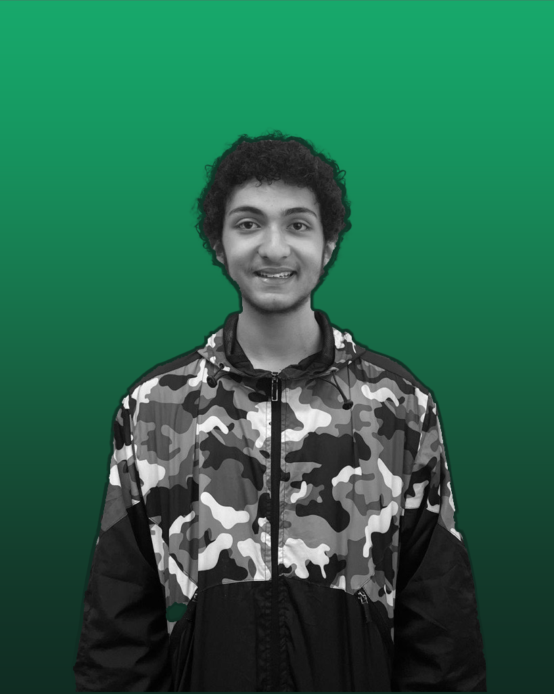

Preservar o meio ambiente é essencial,
e a reciclagem é uma forma eficaz de contribuir.
Separar materiais como papel, plástico e vidro
reduz resíduos e economiza recursos naturais.
Além disso, evitar excessos de consumo e reutilizar
produtos ajudam a diminuir o impacto ambiental.
A compostagem de restos de alimentos também é uma ótima prática.
Pequenas ações, quando somadas, fazem uma grande diferença.
Vamos cuidar do nosso planeta!
As áreas urbanas do Brasil enfrentam sérios danos por catástrofes naturais,
como enchentes e deslizamentos, especialmente em cidades como Rio de Janeiro
e São Paulo. A urbanização desordenada agrava esses problemas.
É crucial implementar políticas de prevenção e melhorar os sistemas de drenagem,
além de conscientizar a comunidade sobre a importância de um planejamento urbano
sustentável.
As consequências das catástrofes naturais nas áreas urbanas do Brasil
incluem a perda de vidas e o deslocamento de famílias, além de danos
à infraestrutura, como ruas e serviços públicos. Isso dificulta o acesso
a saúde e educação e prejudica a economia local, com o fechamento de comércios
e perda de empregos.
O meio ambiente também é afetado, com a destruição de áreas verdes e a contaminação
de corpos d'água. A recuperação é demorada e muitas vezes insuficiente, perpetuando
a vulnerabilidade das comunidades. Essas consequências têm um impacto duradouro no
bem-estar social e econômico.
Doar para ONGs que atuam na preservação do meio ambiente é uma
forma efetiva de contribuir para a proteção dos nossos recursos
naturais e da biodiversidade, elas realizam projetos essenciais,
como reflorestamento, conservação de habitats e educação ambiental,
que ajudam a mitigar os efeitos das mudanças climáticas e a promover
um desenvolvimento sustentável.
Ao apoiar essas iniciativas, você não apenas fortalece a luta por um planeta mais
saudável, mas também inspira outras pessoas a se envolverem na causa, amplificando
o impacto positivo em nossa sociedade e no meio ambiente.
Heloisa Yamanaka: Designer Gráfica Trabalhou no figma e as imagens editadas
Murilo Toledo: Programador Programou o site e treinou a IA
Pedro Tourino: Designer Gráfico Cuidou do figma e deu suporte para o código
Tainara Almeida: Gestora Trabalhou na organização e gestão do projeto e a apresentação do PITCH